Writing formulas
A formula is LaTeX typed into the formula editor. This page follows one from its first keystroke to its card in the Creator: how to type it, what the editor says when it fails, its packages, size, colour and name, and why the order in which the app numbers its glyphs matters once you start to animate.
Create a formula
The Creator, on the left, keeps every formula of the project. Press
+ New to write one. The formula editor opens with the cursor in its LaTeX field, and the
formula has a name of its own already (f1, then f2…) that you can change
whenever you like.
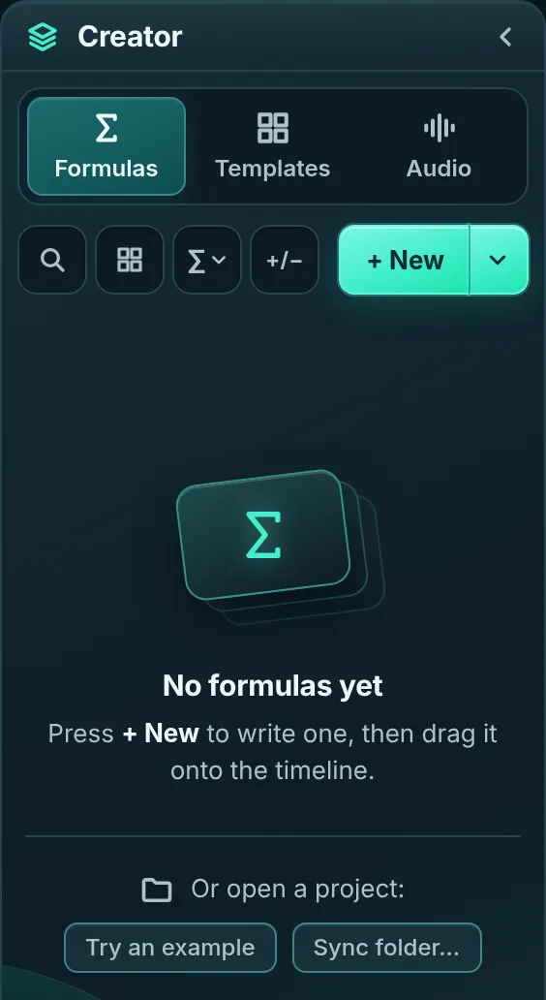
The arrow beside the button lists every kind of object the Creator makes: Formula, Text (LaTeX) and Text (font). A formula is maths; the two texts have an editor of their own, described in LaTeX texts and font texts.
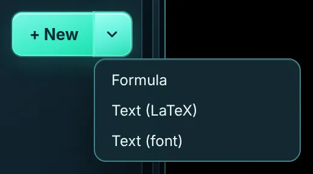
A formula in the Creator is not on the screen of your scene yet. It is an object that clips show: drag it onto the timeline, or choose Add to the timeline in its menu (see Working with the timeline).
The formula editor
Double-click a formula in the Creator, or press Enter on it, to open the editor again. Go through its parts one by one:
The fields of the header act on the formula at once, each change as one undo step. The LaTeX and the packages wait for Apply, so you can type for as long as you like and still see the formula as it was. Outside a text field, Ctrl+Z undoes the header's changes and the applied LaTeX while the editor is open. Drag the bar between the two columns to give the glyphs more or less room, or the corner of the dialog to resize it.
Typing LaTeX
There are two fields for the same formula, and they stay in step:
- The LaTeX field is a visual math editor (MathLive). It typesets what you write, and the ⌨ Keyboard key beside its title shows keys that write in it (see The on-screen keyboard).
- The Raw LaTeX field is the text itself. What you type there is kept exactly as you typed it: the visual field may write the same formula another way, and never rewrites yours.
A formula with several rows uses & to line the rows up and \\ to end
a row, as Manim's align* reads them. The visual field shows such a formula inside an
aligned block, and the raw field keeps what you typed.
When you are ready, press Apply or Ctrl+Enter. The LaTeX and the packages go into the project as one undo step, and the glyph column draws the formula. Until then the footer says Unapplied changes, Revert brings the applied formula back, and closing the dialog asks before it throws your changes away.
The on-screen keyboard
If you would rather press a fraction than type \frac, press
⌨ Keyboard, beside the LaTeX title (1). A keypad opens in the
editor, under the visual field. Its four tabs (2) are Algebra,
Trigonometry, Calculus and Alphabet,
which has the digits, the letters and two rows of Greek ones. A key writes a digit, an operator, a
function, or a structure with its holes: a fraction, a root, a power, an absolute value, a limit, an
integral, a sum. A hole you have not filled yet is an empty group in the raw LaTeX
(\frac{}{}), and the formula still renders. The last row (3) moves the caret, deletes
backward, clears the field (AC) and applies (Apply, the
same as the editor's button).
![The LaTeX section of the formula editor with the keypad open. The Keyboard key beside the LaTeX title is ringed (1). The visual field holds the fraction 1 over 2. Under it, the tabs Algebra, Trigonometry, Calculus and Alphabet are ringed (2), over the keys of Algebra: a fraction and other structures drawn with empty squares for their holes, comparisons, the digits and the four operations. The last row, ringed (3), has left and right arrows, delete, AC and Apply. The Raw LaTeX field reads \frac12.](../media/basics/formulas/keyboard.dark.webp)
A press leaves the cursor in the visual field, so what you type next goes on in the formula. A keypad left shown is there again the next time the editor opens, until its key hides it.
The status line and the errors
About a fifth of a second after you stop typing, the editor renders your draft, before you apply it, and reports the result beside Apply:
| The line says | It means |
|---|---|
| Rendering… | The draft is being typeset. |
| 16 glyphs · MathJax | It rendered: the number of glyphs, and which renderer drew them. See Why the order of glyphs matters. |
| 16 glyphs · exact (LaTeX) | The same, typeset by real LaTeX through the companion. |
| Cannot render | The LaTeX has a problem. A panel under the line says what. |
The panel names the problem in plain words, and, when it can tell, what to do about it. A brace left open:
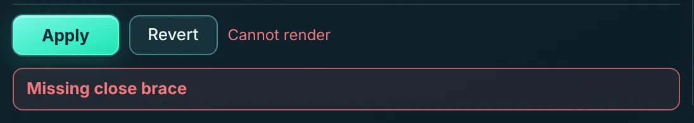
A command from a package you have not added names the package:
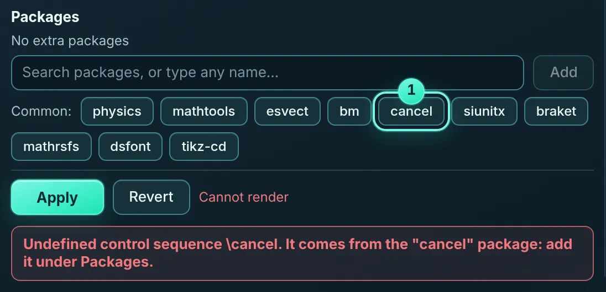
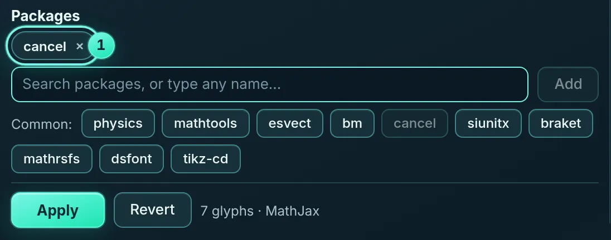
cancel adds the chip (1), and the formula renders.With the companion running, the panel adds LaTeX's own log under the message. Warnings, such as a package MathJax cannot load, are listed under the line in the same place.
Formulas to try
Six formulas, from a plain equation to two aligned rows. Type each one into the Raw LaTeX field of a new formula, and look at what the status line says. The project with all six is at the end of this section if you would rather open it.
Plain
x + 3 = 5Fractions
\frac{numerator}{denominator}: each braced group is one piece. Spaces in the source
are for you; LaTeX sets the spacing of a formula itself.
\frac{a}{b} + \frac{c}{d} = \frac{ad + bc}{bd}Roots, powers and symbols
\sqrt{…} draws a root, ^ raises, and \pm is one of many named
symbols (\pi, \alpha, \infty…).
x = \frac{-b \pm \sqrt{b^2 - 4ac}}{2a}Sums and limits
_ lowers and ^ raises. Braces make a longer index one piece:
_{k=1}.
\sum_{k=1}^{n} k = \frac{n(n+1)}{2}Integrals
dx.\, is a thin space. It reads better before the dx.
\int_0^1 x^2 \, dx = \frac{1}{3}Rows
One & before the sign each row is lined up on, and \\ between
rows.
(a + b)^2 &= a^2 + 2ab + b^2 \\
(a - b)^2 &= a^2 - 2ab + b^2LaTeX packages
Some commands are not plain LaTeX: \cancel belongs to the cancel package,
\dv to physics, \bm to bm. A formula lists the
packages it needs under Packages, one chip each.
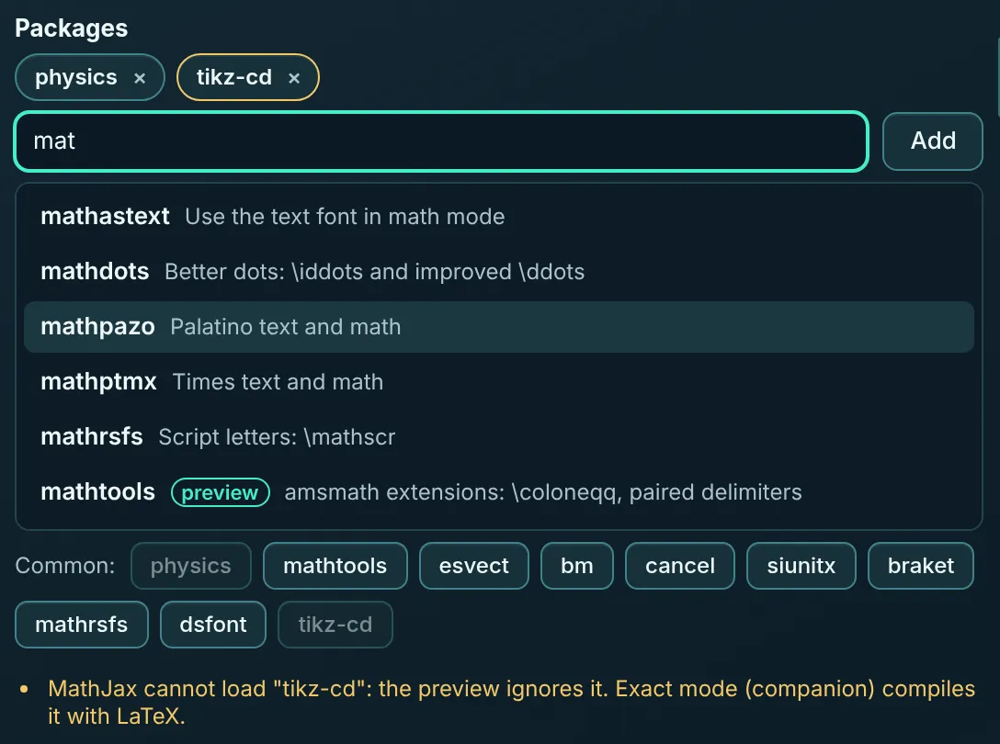
- Press a name in the Common: row to add it.
- Type in Search packages, or type any name… to search a catalogue of more than eighty packages by name or by what they do. The results that carry a preview tag are ones the visual field also understands.
- A package that is not in the catalogue works too: type its name (letters, digits,
-and_) and press Add or Enter. - The × on a chip removes it.
Manim's own template already loads amsmath and amssymb, so you never add
those. Packages count when you press Apply, like the LaTeX.
What every formula of the project needs, such as a \newcommand, goes in the project's
LaTeX preamble instead: File ▸ Project settings…, field LaTeX preamble. It is added after
the packages of each formula.
cancel: crossed-out terms.\frac{\cancel{x}\,y}{\cancel{x}\,z} = \frac{y}{z}physics: \dv{f}{x} is the derivative d f / d x.\dv{f}{x} = \lim_{h \to 0} \frac{f(x + h) - f(x)}{h}bm: bold symbols.\bm{F} = m\,\bm{a}When you export Python, each formula's packages become a TexTemplate (ManimCE) or an
additional_preamble string (ManimGL) in the scene, and the formula is built with it. These
are the lines the editor exports for the first formula above, in ManimCE:
template = TexTemplate()
template.add_to_preamble(r"\usepackage{cancel}")
…
cancelled = MathTex(r"…", font_size=72, tex_template=template)and in ManimGL:
preamble = r"\usepackage{cancel}"
…
cancelled = Tex(r"…", font_size=74.2416, additional_preamble=preamble)The whole file, for the three formulas, is under the tabs. The generated Python explains the rest of it.
Size
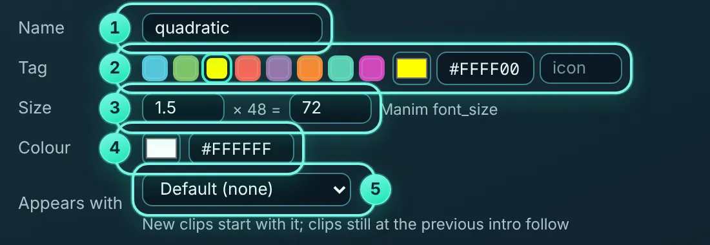
Size (3) is one value written twice. Scale is a factor of Manim's default
font size, 48, and the second field is the font size it makes: 1.5 × 48 = 72. Change either
and the other follows. The scale takes a number or a fraction (3/2) from 0.1 to 10, and the
font size a number from 4 to 512.
Changing the size resizes every clip of the formula where it stands. A clip also has a scale of its own, which the handles of the Preview change; the two multiply.
New formulas start at the standard scale, 1 unless you say otherwise, set in Preferences ▸ Standard scale…. That dialog can also give the same scale to every formula of the project (see Standard scale).
Colour
Colour (4) colours the whole formula, every glyph at once. Click the swatch to pick a colour
in your system's picker, or type a hex value, #RRGGBB, and press Enter. The glyph
column and the Preview use it straight away.
To colour only some glyphs, select them in the glyph column and choose a colour for them. A glyph with a colour of its own keeps it when you change the colour of the formula. The same formula, three ways:
Colouring glyphs and objects covers colours of single glyphs, and Palettes and Chroma Lab the named colours a project can share.
Names and tags
The Name (1) identifies the formula in the Creator, the timeline and your exported code, where it becomes a Python variable. For that reason a name has rules, and the field tells you which one it breaks as you type:
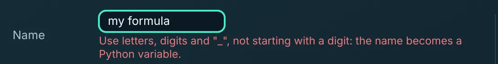
- Letters, digits and
_, not starting with a digit. - Not a Python keyword (
for,class,None…). - Not the name of another formula.
The Tag (2) is a small mark for finding the formula in the lists: one of eight colours or a hex value of your own, and optionally an icon of up to eight characters (a letter, an emoji). A tag never colours the glyphs of the formula. It identifies it: the dot in the Creator, and the clips of the formula on the timeline.
Appears with (5) chooses the intro that every new clip of the formula starts with. It is explained in Appearing and disappearing.
The Creator list
Every formula of the project is a card in the Creator. In the list view a card has a row of information and a drawing of the formula on the project's background. You can drag the bar between the Creator and the Preview to give the cards room.
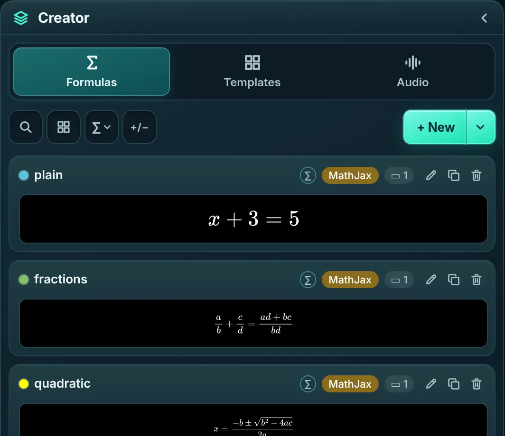
Each card says:
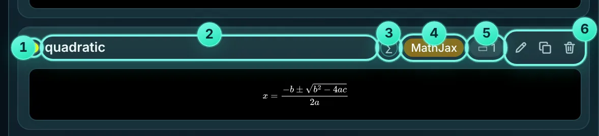
- Its tag: the dot, with its icon if it has one.
- Its name. Double-click it, or press F2 on the card, to rename it.
- Its kind: ∑ for a formula, T for a LaTeX text, P for a font text.
- Its status: MathJax or exact once it has rendered (see below), rendering… while it is being typeset, error when its LaTeX does not compile, and empty before you write anything. Point at the badge for the tooltip.
- How many clips use it on the timeline.
- Three buttons: edit (the pencil), duplicate and delete.
A click selects a card; Ctrl+click and Shift+click select several (see Finding and organizing, which also lists the keys). A double-click or Enter opens the editor. The arrow keys walk the list, and a card can be dragged onto the timeline.
List and blocks
The key beside the magnifier switches how the Creator draws its cards, between the list view and the block view: it shows the icon of the view a press brings. In the block view each formula is a small square with its tag, name, clip count, kind and status. Point at a block and a tooltip beside it shows the formula's drawing. Its edit, duplicate and delete buttons appear while the pointer or the focus is on it. The choice is a preference of the editor, and it is remembered.
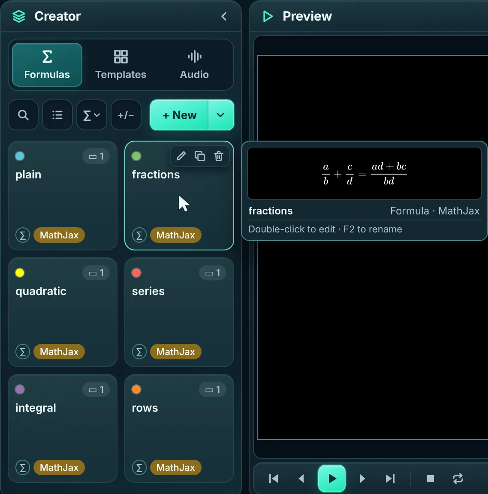
A block narrower than 112 px has no room for all of that beside its name. It shows a compact face instead: the whole block is a pane of glass tinted with the colour of its tag, with the name alone on it. The rest comes at once while the pointer is on the block, in its corners: the edit, duplicate and delete buttons at the top, the kind and a letter for the status at the bottom left, the clip count at the bottom right. The blocks are that narrow whenever the Creator is wide enough for four columns or more, and often when it is narrower.
| Letter | The formula is |
|---|---|
| M | drawn by MathJax |
| e | drawn with the exact glyphs, from the companion |
| ? | a font text that needs the companion |
| … | not drawn yet |
| ! | in error. This one shows without the pointer, and so does the warning mark ⚠ |
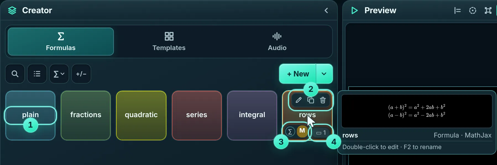
Larger previews
The +/− key of the toolbar, after the ∑ key, makes the previews of the view you see larger with a click and smaller with a right-click (or Shift+click): 1×, 1.5×, 2× or 3×. With the focus on it, ↑ and ↓ do the same. In the list view it sizes the drawing of every card, 52 pixels tall at 1× and 156 at 3×. In the block view it sizes the tooltip beside a block, its drawing as many times wider and taller. The formula is always drawn as large as its box allows.
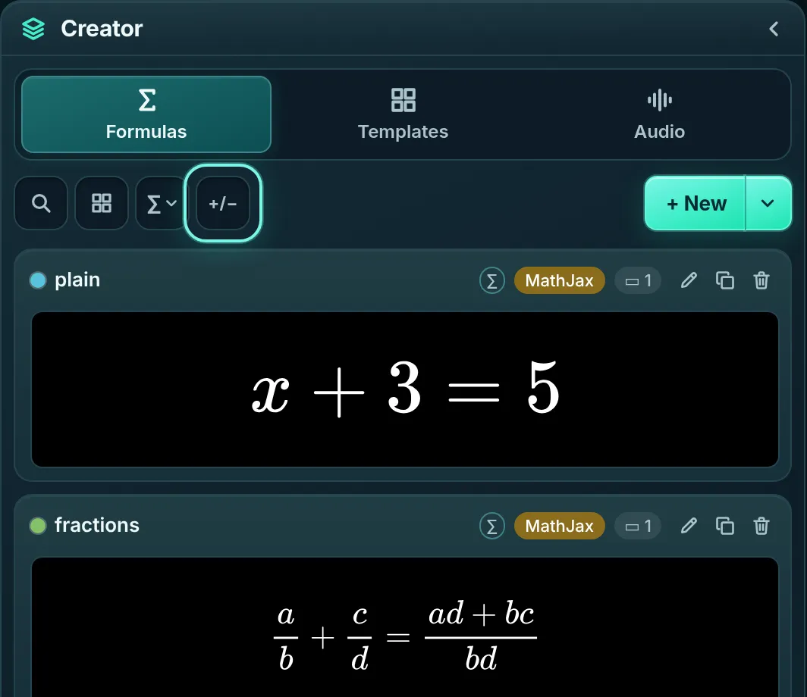
Each view keeps its own size: the cards of the list can stay small while the tooltips of the blocks are large. Both are preferences of the editor, and they are remembered. The tooltip of the key says the size now, and which end is reached: at 1× a right-click does nothing, at 3× a click.
Rename, duplicate and delete
To rename a formula from the list, double-click its name (or press F2 on the card): the name becomes a field, and Enter keeps the new one. The rules of a name are the editor's own.
Duplicate makes a copy right after the original, with everything the original has (its
LaTeX, size, colours, hidden glyphs, packages, tag and intro) under the next free name:
plain becomes plain2, and f007 becomes f008. The copy
is a new formula with no clips.
Deleting a formula removes its clips, and the relations those clips have, with it, so the editor asks first and lists what will go. The button has to be held down: it fills while you hold it. Del on the selected formula, or Edit ▸ Delete formula, does the same. One undo step brings everything back.
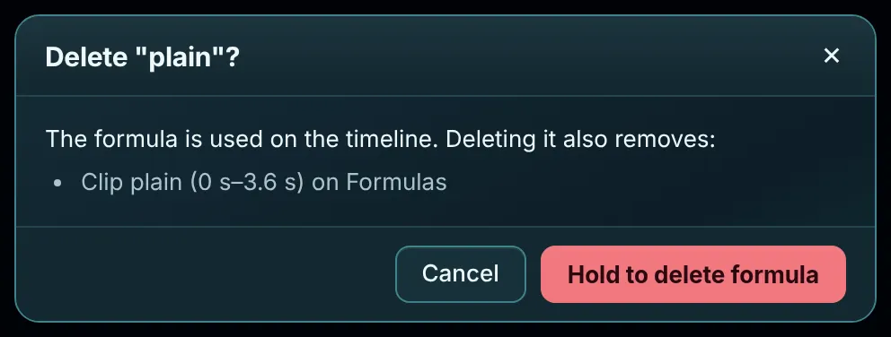
Why the order of glyphs matters
The editor does not animate a formula as a picture. It animates its glyphs, the individual characters and rules it is made of, and everything that points at a glyph does so by its number: its colour, whether it is hidden at the start, and above all the pairs that make one formula turn into another. Hover over the glyph column in the editor, or press its list button, and each glyph shows its number.
Which number a glyph gets depends on who typeset the formula, and that is where the editor's two renderers differ.
- MathJax runs in the browser and needs nothing else. It typesets well, but it numbers the glyphs in its own order.
- Real LaTeX, through the companion, is how Manim itself builds a formula. The editor then uses Manim's glyphs, in Manim's order: exact mode.
The two orders often agree and often do not. A fraction shows it. MathJax numbers its numerator, its denominator and then its bar; LaTeX numbers the numerator, the bar and then the denominator.
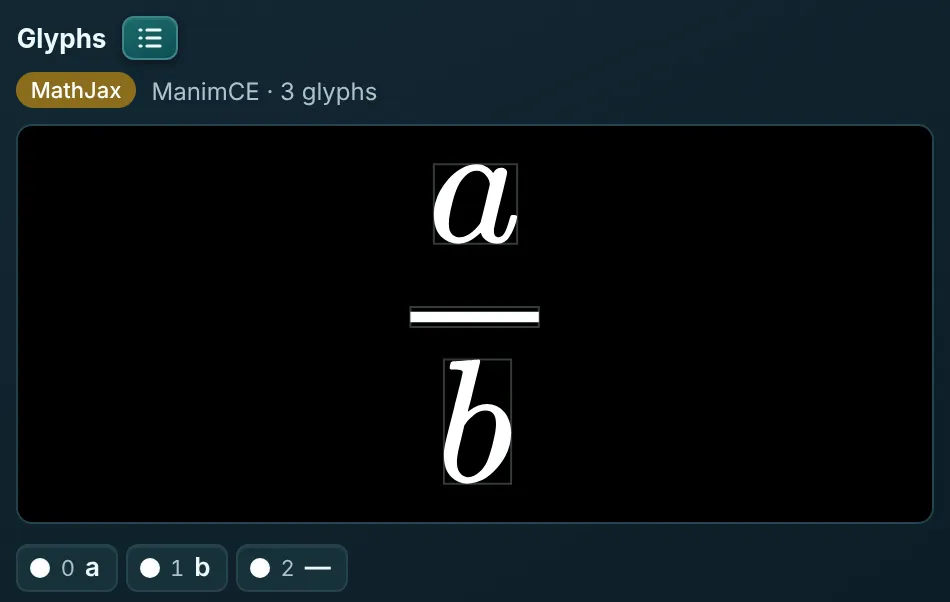
| Formula | MathJax order | LaTeX order (as Manim builds it) |
|---|---|---|
\frac{a}{b} | a, b, bar | a, bar, b |
\sum_{i=0}^{n} i^2 | ∑, i, =, 0, n, i, 2 | n, ∑, i, =, 0, i, 2 |
You can work in the browser alone. A project that relates the glyphs of two formulas, or colours single glyphs, stores them by the numbers the editor sees. When it exports Python and those numbers are MathJax's, the exported scene finds each glyph by where it sits in the formula, which is reliable whenever the two typesettings make the same glyphs. Where they do not (tall brackets, stretchy arrows, ligatures), the scene prints a warning when you run it, and the glyphs without a counterpart are not animated.
With the companion running, the badge in the glyph column says exact, the status line says exact (LaTeX), and the exported Python uses Manim's numbers straight, with no matching. The menu bar says Renderer: MathJax, Renderer: LaTeX or Renderer: mixed, as the formulas of the project stand. A formula you made without the companion keeps working when it comes up: the editor re-numbers its glyphs and carries your colours and pairs over to the new numbers.
The View menu lets you ask for one renderer: Glyph source: Automatic (LaTeX when the companion is online), Glyph source: MathJax or Glyph source: LaTeX (companion).
Where to go next
- Working with the timeline: put a formula in the scene.
- Transforming one formula into another: where the glyph numbers pay off.
- The template library: start from a ready-made formula.
- Finding and organizing: search, groups, several at once.
- Colouring glyphs and objects.